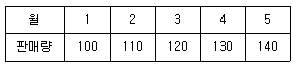
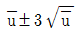
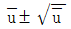
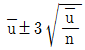
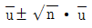

위험물기능장 (2002-07-21 기출문제)
1과목: 임의구분
1. 인화석회(Ca3P2)의 성질로서 옳지 않은 것은?
- 적갈색의 괴상고체이다.
- 비중이 2.51 이고, 1,600℃ 에서 녹는다.
- 물 또는 산과 반응하여 PH3 가스를 발생한다.
- 물과 반응하여 아세틸렌(C2H2)가스를 발생한다.
(정답률: 83%)

2. 알코올류, 초산에스테르류, 의산에스테르류의 탄소수가 증가함에 따른 공통된 특징으로써 옳은 것은?
- 인화점이 낮아진다.
- 연소범위가 증가한다.
- 포말 소화기의 사용이 가능해진다.
- 비중이 증가한다.
(정답률: 51%)
3. 플라스틱의 강도, 유연성, 가소성, 연화온도 등을 자유롭게 조절하기위하여 첨가되는 비휘발성유는?
- 가소제유
- 절삭유
- 연화제유
- 보일유
(정답률: 65%)
4. 다음 금속탄화물이 물과 접촉 했을 때 메탄 가스가 발생하는 것은?
- Li2C2
- Mn3C
- K2C2
- MgC2
(정답률: 77%)
5. 금속칼륨(K)과 금속나트륨(Na)의 공통적 특징이 아닌 것은?
- 은백색의 광택이 나는 무른 금속이다.
- 녹는점 이상으로 가열하면 고유의 색깔을 띠며 산화한다.
- 액체 암모니아에 녹아서 청색을 띤다.
- 물과 심하게 반응하여 수소를 발생한다.
(정답률: 76%)
6. 다음 질산염류에서 칠레초석이라고 하는 것은?
- 질산암모늄
- 질산나트륨
- 질산칼륨
- 질산마그네슘
(정답률: 53%)
7. 다음 제 1류 위험물이 아닌 것은?
- Aℓ4C3
- KMnO4
- NaNO3
- NH4NO3
(정답률: 82%)
8. 삼산화 크롬(Chromium trioxide)을 융점 이상으로 가열(250℃)하였을 때 분해 생성물은?
- CrO2 와 O2
- Cr2O3 와 O2
- Cr 와 O2
- Cr2O5 와 O2
(정답률: 70%)
9. 산화성 고체 위험물에 속하는 것으로 휘발이 쉽고 가열하면 액체로 되지않고 자주색의 자극성 냄새가 나는 증기를 발생한 물질은? (단, 고체가 직접 증기로 되는것)
- 인(Phosphorus)
- 탄화칼슘(Calcium earbide)
- 산화프로필렌(Propylene oxide)
- 요오드(Iodine)
(정답률: 69%)
10. 무수황산 (sulfer trioxide) 이 물과 반응하여 생성하는 물질은?
- H2SO4 와 Cl2
- H2SO4 와 SO3
- H2O 와 SO3
- H2SO4
(정답률: 64%)
11. 자기반응성물질의 가장 중요한 연소특성은 어느 것인가?
- 분해 연소이다.
- 폭발적인 자기연소이다.
- 증기는 공기보다 무겁다.
- 연소시 유독가스가 발생한다.
(정답률: 77%)
12. 다음 알콜유 중 지정수량이 100ℓ 에 해당하는 위험물은?(오류 신고가 접수된 문제입니다. 반드시 정답과 해설을 확인하시기 바랍니다.)
- 아세톤
- 퓨젤유
- 메틸알콜
- 에틸알콜
(정답률: 58%)
13. 다음 석유류 가운데 지정수량이 2,000ℓ 에 속하는 것은?(관련 규정 개정전 문제로 여기서는 기존 정답인 1번을 누르면 정답 처리됩니다. 자세한 내용은 해설을 참고하세요.)
- 에틸렌 글리콜
- 등유
- 기계유
- 아세톤
(정답률: 72%)
14. 염소산 염류는 분해되어 산소를 발생하는 성질이 있다. 융점과 분해온도와의 관계 중 옳은 것은?
- 융점 이상의 온도에서 분해되어 산소를 발생한다.
- 융점 이하의 온도에서 분해되어 산소를 발생한다.
- 융점이나 분해온도와 무관하게 산소를 발생한다.
- 융점이나 분해 온도가 동일하여 산소를 발생한다.
(정답률: 78%)
15. 옥외탱크 저장소 방유제의 2 면 이상(원형인 경우는 그 둘레의 1/2 이상) 은 자동차의 통행이 가능하도록 폭 몇 m 이상의 통로와 접하도록 하여야 하는가?
- 2m 이상
- 2.5m 이상
- 3m 이상
- 3.5m 이상
(정답률: 64%)
16. 제3류 위험물 중 보호액 속에 저장하는 것으로 가장 옳은 것은?
- 화기를 피하기 위하여
- 공기와의 접촉을 피하기 위하여
- 산소발생을 피하기 위하여
- 승화를 막기 위하여
(정답률: 92%)
17. 석유판매 취급소의 작업실에 대한 설치 규정으로 맞지 않는 것은?
- 바닥면적은 6m2 이상 15m2 이하로 할 것
- 출입구에 을종방화문을 설치할 것
- 출입구는 바닥으로부터 0.1m 이상의 턱을 설치할 것
- 내화구조로 된 벽으로 구획할 것
(정답률: 85%)
18. 옥외탱크저장소의 탱크는 위험물의 폭발등으로 탱크안의 압력이 이상 상승할 경우 내압 방출구조를 위한 방법이 아닌 것은?
- 지붕판을 측판보다 얇게 한다.
- 지붕판과 측판의 접합을 측판의 상호접합보다 강하게 한다.
- 지붕판을 보강재 등으로 접합하지 아니 한다.
- 지붕판과 측판의 접합은 측판과 저판의 접합보다 약 하게 한다.
(정답률: 72%)
19. 독가스를 마셨을 때 응급치료에 사용할 수 있는 약품은?
- 에틸 에테르
- 클로로 벤젠
- 에스테르류
- 에틸알코올
(정답률: 77%)
20. 연소할 우려가 있는 개구부의 길이가 30m 일 경우 설치하여야할 드렌처헤드 갯수는?
- 8
- 10
- 12
- 14
(정답률: 50%)
2과목: 임의구분
21. 소방법에 의한 특수장소 등의 소방시설 시공 신고는 누구에게 하는가?
- 소방서장 또는 소방본부장
- 시장 또는 군수
- 도지사 또는 경찰국장
- 행정자치부장관 또는 건설교통부장관
(정답률: 83%)
22. 위험물의 지정수량은 누가 지정한 수량 인가?
- 대통령령이 정하는 수량
- 행정자치부령으로 정한 수량
- 시장,군수가 정한 수량
- 소방본부장 또는 소방서장이 정한 수량
(정답률: 78%)
23. 옥외탱크 저장소에서 펌프실 외의 장소에 설치하는 펌프 설비주위 바닥은 콘크리트 기타 불침윤 재료로 경사지게 하고 주변의 턱높이를 몇 m 이상으로 하여야 하는가?
- 0.15m 이상
- 0.20m 이상
- 0.25m 이상
- 0.30m 이상
(정답률: 80%)
24. 2도 화상에 알맞는 구급처치 방법은?
- 붕산수로 씻는다.
- 묽은 염산으로 씻는다.
- 탄산수소액으로 씻는다.
- 상처부위를 많은 물로 씻는다.
(정답률: 84%)
25. 탄화알루미늄 1 kmol 이 물과 반응 했을 때 몇 kmol 의 메탄가스가 발생하는가?
- 1kmol
- 2kmol
- 3kmol
- 4kmol
(정답률: 49%)
26. 대형 위험물 저장시설에 옥내 소화전 2개와 옥외 소화전 1개를 설치 하였다면 수원의 총수량은?(오류 신고가 접수된 문제입니다. 반드시 정답과 해설을 확인하시기 바랍니다.)
- 3.4m3
- 5.2m3
- 7.0m3
- 12.2m3
(정답률: 61%)
27. 피난기구 설치기준에서 몇 층 이상의 층에 금속성 고정 사다리를 설치하는가?
- 3층
- 4층
- 6층
- 8층
(정답률: 57%)
28. 가동식의 벽, 제연경계벽, 담파 및 배출기의 작동은 무엇과 연동되어야 하며, 예상제연구역 및 제어반에서 어떤 기동이 가능하도록 하여야 하는가?
- 스프링클러설비 - 자동기동
- 통로유도등 - 수동기동
- 무선통신보조설비 - 수동기동
- 자동화재감지기 - 수동기동
(정답률: 57%)
29. 셀룰로이드류의 성질을 설명한 것으로 맞지 않는 것은?
- 셀룰로이드류는 아세톤, 벤젠, 물에 잘 녹는다.
- 충격에 의한 발화는 없지만 불에 닿으면 바로 착화하여 빠르게 연소 확대가 된다.
- 착화점이 180℃ 정도이며 제5류 위험물질 이다.
- 오래된 셀룰로이드는 습기가 높고 자연 발화되기 쉽다.
(정답률: 55%)
30. 최소 발화에너지를 가장 적게 필요로 하는 위험물은?
- 메틸에틸켑톤
- 메탄올
- 등유
- 에틸에테르
(정답률: 46%)
31. CS2 는 화재예방상 액면위에 물을 채워두는 경우가 많다. 그 이유로 맞는 것은?
- 산소와의 접촉을 피하기 위하여
- 가연성 증기의 발생을 방지하기 위하여
- 공기와 접촉하면 발화되기 때문에
- 불순물을 물에 용해시키기 위하여
(정답률: 58%)
32. 기계유, 실린더유 그 밖의 액체로서 인화점이 섭씨 200도 이상인 석유류는?
- 제1석유류
- 제4석유류
- 제3석유류
- 제2석유류
(정답률: 88%)
33. 산화성고체 "갑종" 위험물인 염소산 염류의 수납방법으로 가장 옳은 것은?
- 방수성이 있는 플라스틱드럼 또는 화이버드럼에 지정 수량을 수납하고 밀봉한다.
- 양철판제의 양철통에 지정수량과 물을 가득 담아 밀봉한다.
- 강철제의 양철통에 지정수량과 파라핀 경유 또는 등유로 가득 채워서 밀봉한다.
- 강철제통에 임의의 수량을 넣고 밀봉한다.
(정답률: 79%)
34. 위험물의 제조소 및 일반취급소에서 지정수량이 12만배 미만을 저장, 취급할 때 화학 소방차의 대수와 조작인원은?
- 화학소방차 1대, 조작인원 5인
- 화학소방차 2대, 조작인원 10인
- 화학소방차 3대, 조작인원 15인
- 화학소방차 4대, 조작인원 20인
(정답률: 82%)
35. 할로겐화합물 할론 2402 를 가압식 저장용기에 충전할 때 저장용기의 충전비로 옳은 것은?
- 0.67이상 2.75미만
- 0.7이상 1.4이하
- 0.9이상 1.6이하
- 0.51이상 0.67미만
(정답률: 66%)
36. 제조소등의 설치자는 그 시설기준에의 적합여부를 정기적으로 자체점검을 하여 누구에게 점검결과를 제출하는가?
- 경찰청장
- 소방본부장
- 시.도지사
- 한국소방안전협회장
(정답률: 67%)
37. 위험물의 류별 특성에 있어서 틀린 것은?
- 제6류 위험물은 강산화제이며 다른 것의 연소를 돕고 일반적으로 물과 접촉하면 발열한다.
- 제1류 위험물은 일반적으로 불연성이지만 강산화제이다.
- 제3류 위험물은 모두 물과 작용하여 발열하고 수소가스를 발생한다.
- 제5류 위험물은 일반적으로 가연성 물질이고 자기연소를 일으키기 쉽다.
(정답률: 70%)
38. 산과 접촉하였을 때 이산화염소 가스를 발생하는 제1류 위험물은?
- 옥소산염류
- 중크롬산염류
- 아염소산염류
- 취소산염류
(정답률: 83%)
39. 금속칼륨 100㎏과 알킬리튬 100㎏을 취급할 때 지정수량(kg)은?
- 10kg
- 20kg
- 50kg
- 200kg
(정답률: 54%)
40. 제1 석유류의 인화점은?
- 섭씨 21도 미만
- 섭씨 21도 이상 70도 미만
- 섭씨 영하 20도 이상 0도 이하
- 섭씨 0도 이상 21도 미만
(정답률: 76%)
3과목: 임의구분
41. 특수인화물 중 1기압에서 액체로 되는 것으로서 발화점이 섭씨 100도이하, 인화점이 -40℃ 이하인 것은?
- 이황화탄소
- 산화프로필렌
- 디에틸에테르
- 아세트알데히드
(정답률: 55%)
42. 위험물의 보호액으로서 틀린 것은?
- 황린 - 물
- 칼륨 - 석유
- 나트륨 - 에탄올
- CS2 - 물
(정답률: 79%)
43. 탄화소수 C5H12-C9H20 까지의 포화.불포화 탄화수소의 혼합물인 휘발성 액체위험물의 인화점 범위는?
- -5℃ ∼ 10℃
- -43℃ ∼ -20℃
- -70℃ ∼ -45℃
- -15℃ ∼ -5℃
(정답률: 67%)
44. 도료로 칠을 한 표면용(박리제)의 지정수량은 얼마인가?
- 50ℓ
- 100ℓ
- 300ℓ
- 1000ℓ
(정답률: 54%)
45. 크레졸의 성질 중 틀린 것은?
- 3가지 이성질체를 갖는다.
- 피부와 접촉되면 화상을 입는다.
- 비등점이 100℃ 미만이다.
- 비중은 물보다 크다.
(정답률: 40%)
46. 산소 64g 속에는 몇 개의 산소 분자가 들어 있는가?
- 3 × 1023
- 6 × 1023
- 9 × 1023
- 12 × 1023
(정답률: 55%)
47. 표준상태에서 어떤 기체의 밀도가 3(g/ℓ)라면, 이 기체의 분자량은?
- 11.2
- 22.4
- 44.8
- 67.2
(정답률: 62%)
48. 압력이 일정할 때 기체의 부피는 온도에 비례하여 변화한다. 가장 관련이 깊은 것은?
- 뉴톤의 제3법칙
- 보일의 법칙
- 샤를의 법칙
- 보일-샤를의 법칙
(정답률: 83%)
49. 진한황산을 묽은황산으로 묽히는 데에는 상당한 주의를 요한다. 진한황산을 유리막대를 통해 증류수가 들어있는 비커에 약간씩 흘려 넣어 주면서 계속 저어 주어야 한다. 그 이유를 설명한 것 중 가장 옳은 것은?
- 진한 황산은 비휘발성이기 때문이다.
- 진한 황산은 용해열이 크기 때문이다.
- 진한 황산은 산화력이 크기 때문이다.
- 진한 황산은 탈수작용을 하기 때문이다.
(정답률: 62%)
50. 지정 유기과산화물 저장창고의 외벽에 관한 설명으로 옳은 것은?
- 두께 20cm이상의 보강 콘크리트 블록조
- 두께 20cm이상의 철근 콘크리트조
- 두께 30cm이상의 철근 콘크리트조
- 두께 30cm이상의 철골 콘크리트 블록조
(정답률: 59%)
51. 표준상태에서 산소기체의 부피가 가장 적은 것은?
- 1mole
- 16g
- 22.4 L
- 6.02× 1023개 분자
(정답률: 69%)
52. 1S2 2S2 2P3 의 전자배열을 갖는 원자의 최외각 전자수는 몇 개 인가?
- 2개
- 3개
- 4개
- 5개
(정답률: 51%)
53. 다음 중 산화제가 아닌 것은?
- H2O2
- KCℓO3
- KMnO4
- H2SO3
(정답률: 66%)
54. 제5류 위험물인 페닐히드라진의 분자식은?
- C6H5N=NC6H4OH
- C6H5NHNH2
- C6H5NHHNC6H5
- C6H5N=NC6H5
(정답률: 65%)
55. 공급자에 대한 보호와 구입자에 대한 보증의 정도를 규정해 두고 공급자의 요구와 구입자의 요구 양쪽을 만족하도록 하는 샘플링 검사방식은?
- 규준형 샘플링 검사
- 조정형 샘플링 검사
- 선별형 샘플링 검사
- 연속생산형 샘플링 검사
(정답률: 55%)
56. 표는 어느 회사의 월별 판매실적을 나타낸 것이다. 5개월 이동평균법으로 6월의 수요를 예측하면?

- 150
- 140
- 130
- 120
(정답률: 84%)
57. u 관리도의 공식으로 가장 올바른 것은?




(정답률: 83%)
58. 도수분포표를 만드는 목적이 아닌 것은?
- 데이터의 흩어진 모양을 알고 싶을 때
- 많은 데이터로부터 평균치와 표준편차를 구할 때
- 원 데이터를 규격과 대조하고 싶을 때
- 결과나 문제점에 대한 계통적 특성치를 구할 때
(정답률: 59%)
59. 설비의 구식화에 의한 열화는?
- 상대적 열화
- 경제적 열화
- 기술적 열화
- 절대적 열화
(정답률: 53%)
60. 모든작업을 기본동작으로 분해하고 각 기본동작에 대하여 성질과 조건에 따라 정해놓은 시간치를 적용하여 정미시간을 산정하는 방법은?
- PTS법
- WS법
- 스톱워치법
- 실적기록법
(정답률: 83%)